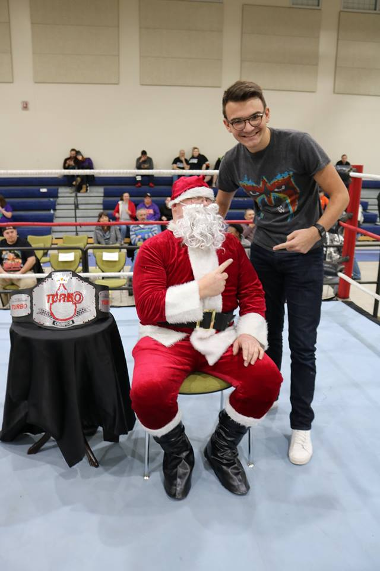
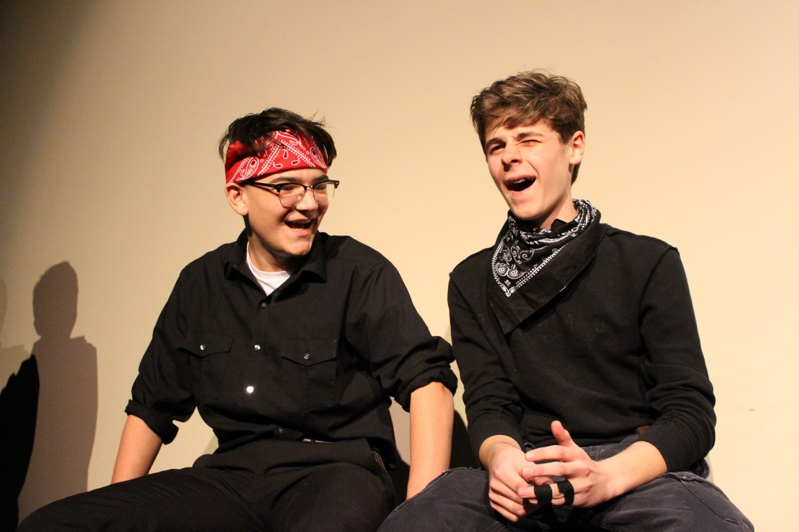
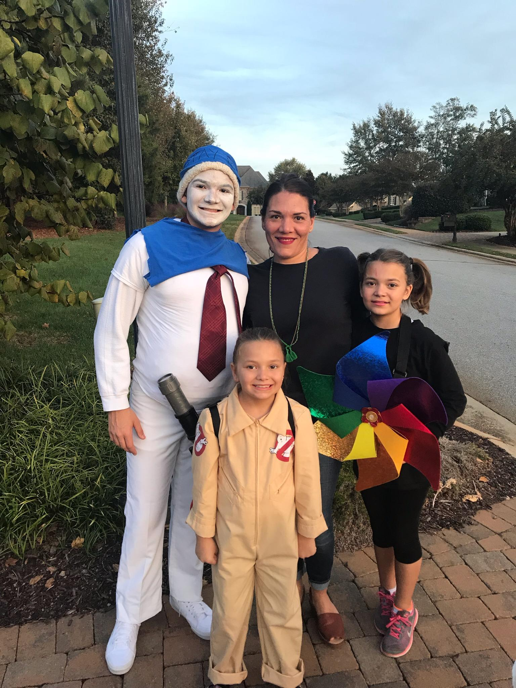
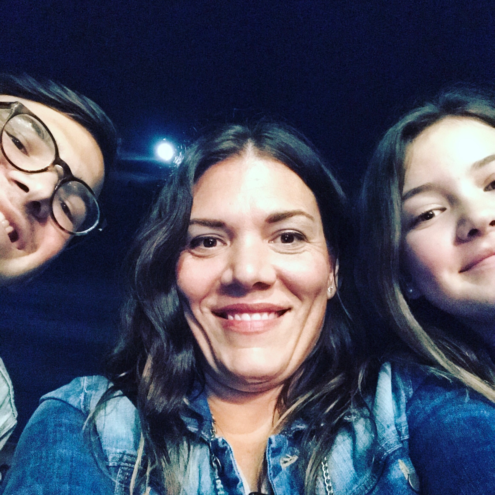
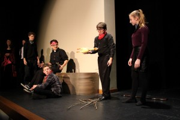
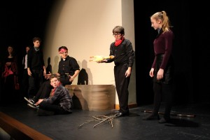
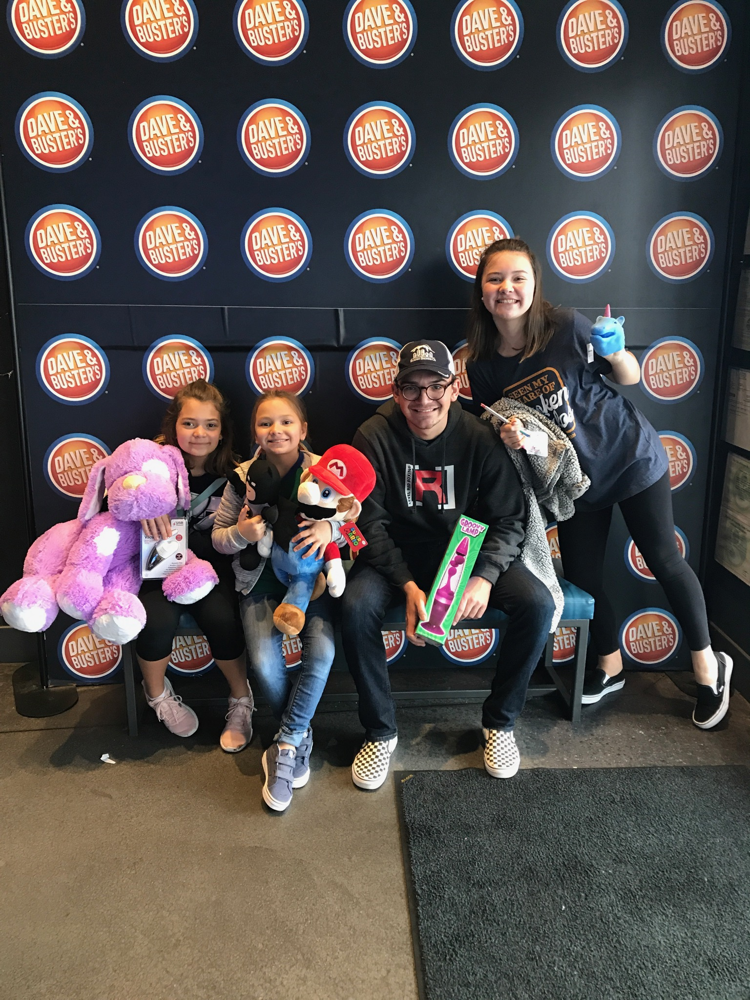
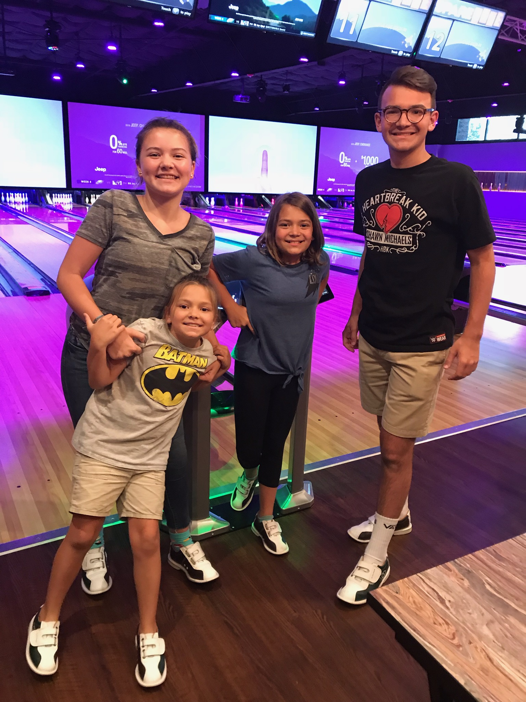

Classic Cole Martin
Son, Brother, Friend, Student
Cole Martin: The Friend
I have lived in many places during my lifetime. Being a nomadic person, I have developed many good friendships. I am very approachable, trustworthy person, which allows the skills to make friends. All though it is hard to maintain long distance friendship, with social media it makes it easier to stay in contact. I still will dm, text, or snapchat many of the friends I have made.
 Cole Martin: The Son
I am the only boy in my family, making me the only son. I am the greatest son in the world because I am family man. I hang out with my sisters, playing minecraft and numerous other video games. I devoted time in my day to my parents and sit down and chat with them. I am the best son in my family, which is a hard competition to lose.
 Cole Martin: The Student
I attend St Joseph's Catholic School. I am always about getting good grades and developing my academic skills. I like to go to school to hang out with friends, as well as attend social activites, like dances. I am very active in extra curricular activites, like Youth in Government. After I graduate, I intend to go to college.
 

Cole Martin: The Brother
I have stated previously in the Cole Martin: The Son section, that I am a family man. I enjoying hanging out with my sister and look out for them all the time. Many people haved told me how lucky my sisters are to have me as a big brother. Yes, my sisters and do not get along all the time, but most of the time we do. Many activites we do together include video games, board games, skate boarding and many more.
 